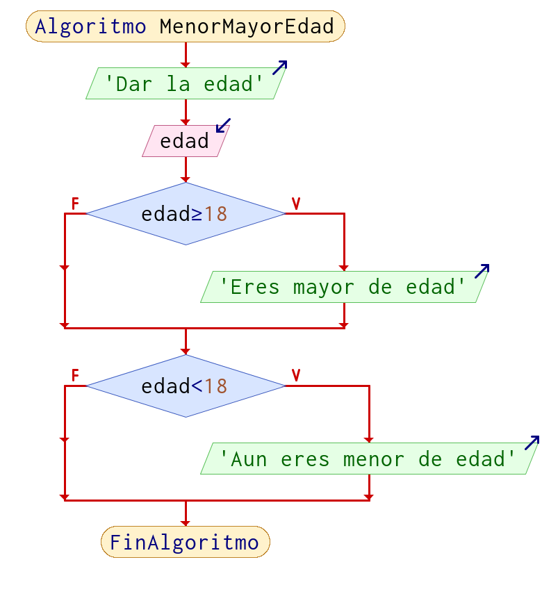
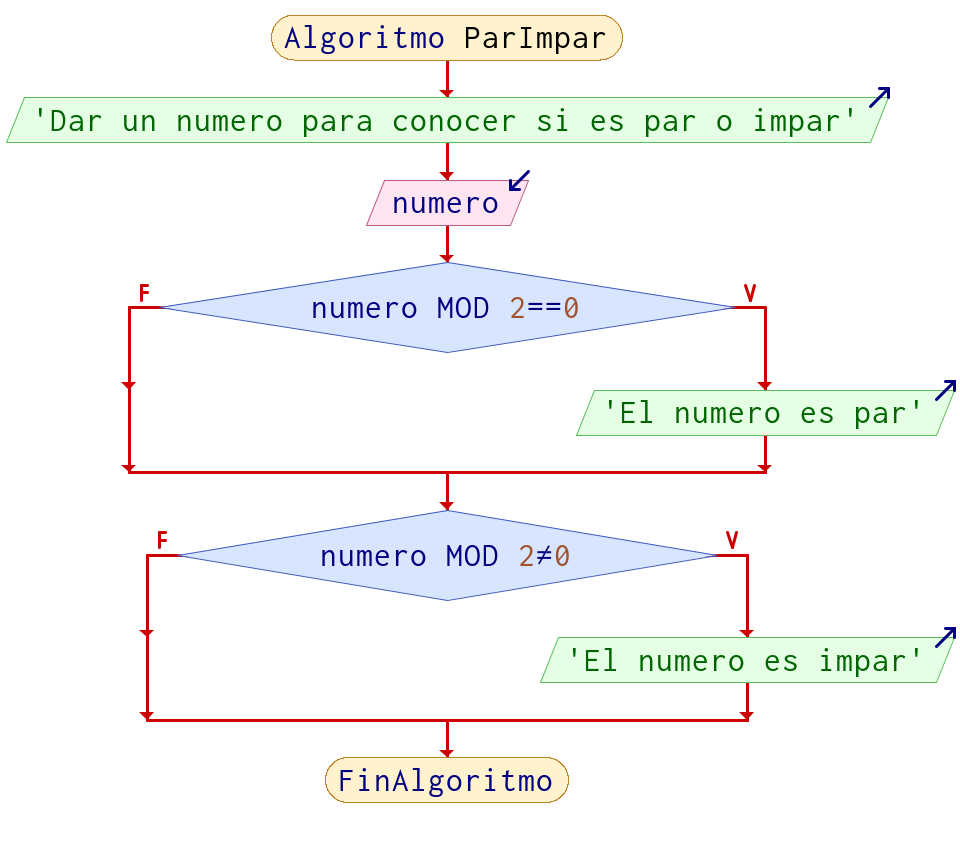
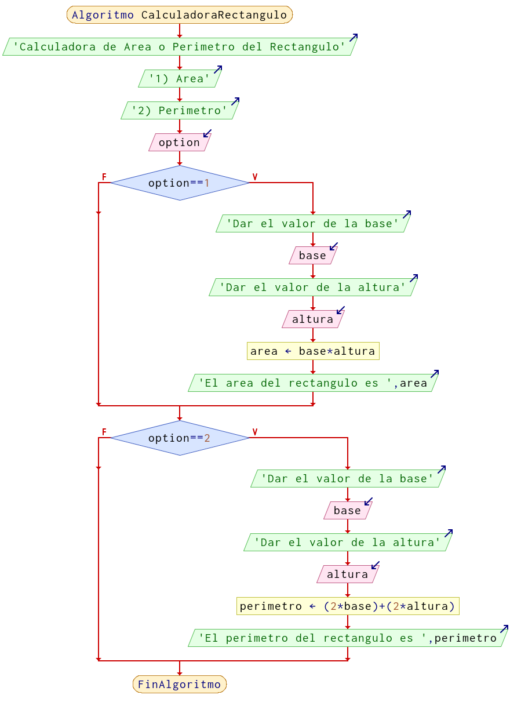

Operadores de comparación o relación o para decisión
Los operadores de relación te dan unicamente dos respuesta (lógicas) si o no, que son equivalentes a true o false (booleano), uno o cero, 1 o 0 (digitales), 0V o 5V (voltaje)respectivamente.
| Nombre | Matemáticas | Algoritmos (Programación) |
|---|---|---|
Menor que |
< |
< |
Menor o igual que |
≤ |
<= |
Mayor que |
> |
> |
Mayor o igual que |
≥ |
>= |
Igual que |
= |
== |
Diferente que |
≠ |
!= |
Nota: El
diferente depuede variar por lenguaje
Sintaxis de comparación
La forma en la que se escriben las comparaciones es:
| Izquierda | Centro | Derecha |
|---|---|---|
valor/variable |
operador |
valor/variable |
5 |
== |
8 |
a |
>= |
b |
10 |
<= |
x |
a |
<= |
2 |
Ejemplos de comparación
Las únicas comparaciones que se pueden realizar son entre números, con respecto a las letras o carácter (único), la comparación es en su valor ASCII, en si los textos no se pueden comparar; sin embargo, aplicado a un lenguaje en concreto esto puede variar.
| Comparación | Resultado |
|---|---|
5 > 8 |
no |
10 > 8 |
si |
20 > 5 |
no |
8 >= 8 |
si |
6 < 8 |
si |
2 <= 8 |
si |
0 == 8 |
no |
1 != -8 |
si |
Las comparaciones pueden ser entre variables, obviamente dicha variable debe contener un valor previamente.
En este caso las variables tienen este valor:
a = 5b = 2
| Comparación | Resultado |
|---|---|
a > b |
si |
a >= b |
si |
a < b |
no |
a <= b |
no |
a == b |
no |
a != b |
si |
Ejemplos
Ejemplo 1
Preguntar al usuario su edad e imprimir si es mayor o menor de edad en función de la edad.
Pseudocódigo
Algoritmo MenorMayorEdad
Imprimir "Dar la edad"
Leer edad
Si edad >= 18 Entonces
Imprimir "Eres mayor de edad"
FinSi
Si edad < 18 Entonces
Imprimir "Aun eres menor de edad"
FinSi
FinAlgoritmo

Ejemplo 2
Solicitar un numero e indicar si es par o impar.
Pseudocódigo
Algoritmo ParImpar
Escribir 'Dar un numero para conocer si es par o impar'
Leer numero
Si numero % 2 == 0 Entonces
Escribir 'El numero es par'
FinSi
Si numero % 2 != 0 Entonces
Escribir 'El numero es impar'
FinSi
FinAlgoritmo
Diagrama de flujo

Ejemplo 3
Calculadora para obtener el área o el perímetro de un rectángulo, dependiendo del usuario
Pseudocódigo
Algoritmo CalculadoraRectangulo
Escribir 'Calculadora de Area o Perimetro del Rectangulo'
Escribir '1) Area'
Escribir '2) Perimetro'
Leer option
Si option == 1 Entonces
Imprimir "Dar el valor de la base"
Leer base
Imprimir "Dar el valor de la altura"
Leer altura
area = base * altura
Imprimir "El area del rectangulo es ", area
FinSi
Si option == 2 Entonces
Imprimir "Dar el valor de la base"
Leer base
Imprimir "Dar el valor de la altura"
Leer altura
perimetro = (2*base) + (2* altura)
Imprimir "El perimetro del rectangulo es ", perimetro
FinSi
FinAlgoritmo
Diagrama de flujo

Nota: No es la única forma en la que se pueden realizar estos ejercicios, recuerda que lo importante es resolver el problema, que hayan mas o menos pasos, diferentes formulas, etc, no significa que este mal.
Facebook Mecatrónica 85
Realizado por Alejandro Leyva